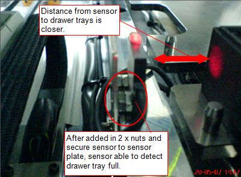
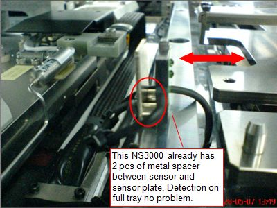
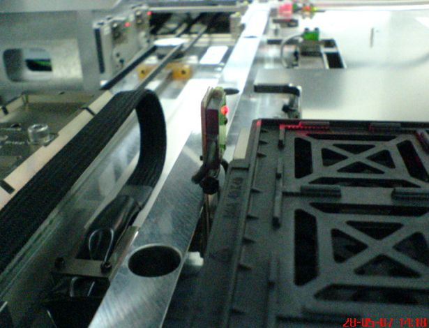

Service History
Subject: Drawer tray full sensor SQ115 detection error
Handler Model: NS-3000 (AMD, NS302, S/N: 151025)
Controller: RC520
Date: 29 May 2007
Symptom
NS-3000 Drawer tray full sensor SQ115 unable to detect tray full(4-5 trays and above) intermittently. Thus causing empty tray arm to continue filling up trays onto tray drawer and also hit the trays on the drawer during X-axis movement.
|
No. |
System No. |
Cust. No. |
MFG |
|
|
|||
|
1 |
151023 |
NS301 |
11.2006 |
|
2 |
151025 |
NS302 |
03.2007 |
|
3 |
15770 |
NS303 |
03.2007 |
Action
Problem handler is NS302 (S/N: 151025). Checked NS303 (S/N: 15770) but there are additional metal spacers in between the sensor and sensor plate so detection distance of sensor to the trays are closer. NS302 S/N 151025 does not have the spacers so temp solution I just add in nuts to close up the detection distance.
A check on NS303 S/N 15770 found that there are already 2 pcs of metal spacer mounted between the sensor and sensor plate and detection for tray full on drawer is ok.
|
 NS302 S/N: 151025 |
 NS303 S/N: 15770 |
NS301 empty tray arm is vacuum pad type and the sensor plate is mounted in front.
For NS302 and NS303, sensor plate cannot be mounted in front as there are chances the empty tray chuck might hit the sensor when open/close.

EPSON sent some spacer in June for use on AMD.
Cause